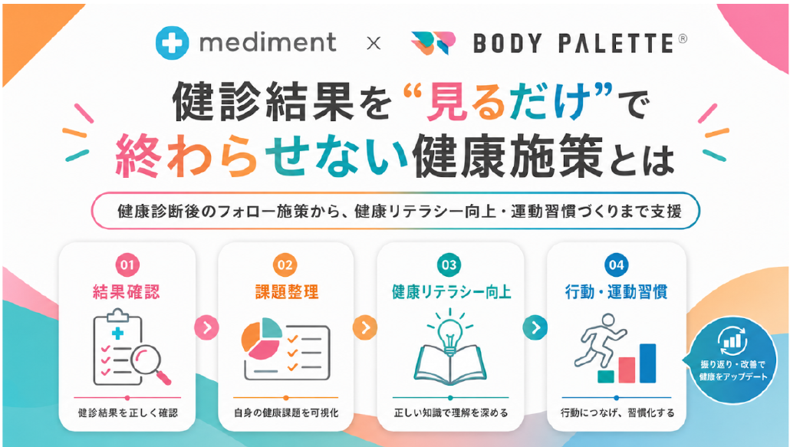
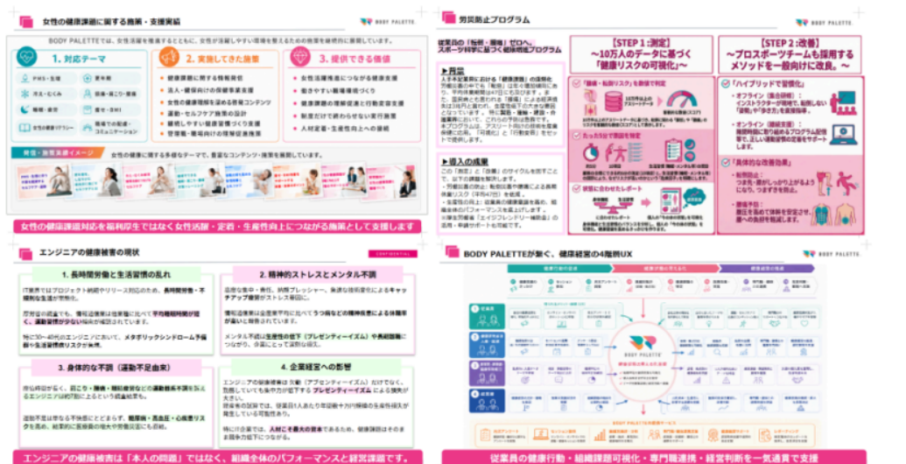

健康診断は、従業員の健康状態を把握する重要な取り組みです。 一方で、結果を確認するだけでは、日々の行動や生活習慣の変化につながりにくい場合があります。
大切なのは、健診結果をもとに従業員が自分の健康に関心を持ち、 日常の行動を少しずつ変えていける接点をつくることです。
BODY PALETTEは、月1回のアンケートをもとに組織単位で健康状態の傾向を把握し、 企業ごとの健康課題に応じた施策設計・運用を支援します。


Health Check Follow-up
健康診断後の結果確認から、健康課題の整理、健康リテラシー向上、 運動習慣づくり、継続的な改善提案までをBODY PALETTEが支援します。
Overview
健康診断は、従業員の健康状態を把握する重要な取り組みです。 一方で、結果を確認するだけでは、日々の行動や生活習慣の変化につながりにくい場合があります。
大切なのは、健診結果をもとに従業員が自分の健康に関心を持ち、 日常の行動を少しずつ変えていける接点をつくることです。
BODY PALETTEは、月1回のアンケートをもとに組織単位で健康状態の傾向を把握し、 企業ごとの健康課題に応じた施策設計・運用を支援します。
健診結果を「見るだけ」で終わらせず、健康経営の具体的な取り組みへ接続します。
Support
組織単位・集団単位で従業員の健康状態を把握し、課題の傾向を整理します。
運動不足、肩こり・腰痛、疲労感、睡眠などの課題に応じた施策を企画します。
セミナーや運動プログラムの実施後、振り返りと次回施策への改善提案を行います。
Program Image
健診結果から運動不足や生活習慣改善の必要性が見えていても、 社内だけで具体的な施策を継続的に届けるには、専門性や運用工数が必要になります。

健診後フォロー、健康リテラシー向上、運動習慣づくりまで一体で支援します。
Recommended